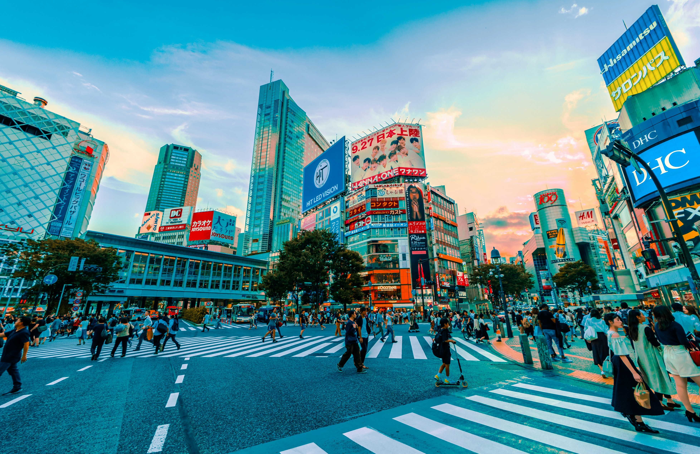

Tervetuloa Japaniin, missä menneisyyden perinteet sekoittuvat tulevaisuuden innovaatioihin luoden ainutlaatuisen kontrastin. Astu matkaan ja koe sekoitus historian tarinoita, kulttuurin kauneutta sekä modernin maailman nähtävyyksiä, jotka odottavat jokaisella kadunkulmalla ja temppeleiden kätköissä.
Suosituimmat kohteet
Suunnittele kymmenen päivän matka Japaniin
Japanissa on paljon nähtävää ja mietit varmaan, miten pystyt näkemään mahdollisimman paljon yhdellä lomakerralla. Tämän matkasuunnitelman avulla pääset suunnittelemaan monipuolisen matkan täynnä erilaisia ja ainutlaatuisia nähtävyyksiä!
1. ja 2. päivä: Tokio
Tokiossa on lukuisia ikonisia nähtävyyksiä, kuten Senso-jin temppeli, Shibuyan risteys, Tokyo Skytree ja keisarillinen palatsi. Ensimmäiset päivät Tokiossa antavat sinulle mahdollisuuden kokea nämä tärkeimmät nähtävyydet ja saada mahdollisimman kattavan näkemyksen Tokiosta!

3. päivä: Fuji ja Kioto
Seuraavana päivänä pääset näkemään kuuluisan Fuji-vuoren, joka on Japanin kuuluisin maamerkki ja pääset jatkamaan matkaa kohti Kiotoa!
4. päivä: Kioto
Kiotossa kannattaa olla kaksi päivää, sillä koet vanhoja perinteitä, temppeleitä ja pyhäkköjä Japanin vanhassa keisarillisessa pääkaupungissa.

5. päivä: Nara
Kioton lähellä olevasta Naran kaupungista löydät suuren buddha-patsaan, Daibutsun, joka on yksi kahdeksasta Unescon maailmanperintökohteesta Narassa. Narassa sijaitsee myös Nara Park, jossa tapaat kohteliaat japaninhirvet!

6. päivä: Osaka
40 minuutin matkan päässä Narasta saavut
Osakaan, jossa pääset nauttimaan varsinkin
yöelämästä kirkkaiden valojen ja maukkaiden
ruokien kera.

7. päivä: Himeji
Himejissä pystyt vierailemaan Himejin
linnassa, josta on tullut Japanin kansallissaarre
sekä yksi Unescon maailmanperintökohteista.

8. ja 9. päivä: Hiroshima
Tunnin matkan päässä Himejistä pääset
Hiroshimaan, kuuluisaan Japanin kaupunkiin
sen historian tapahtumien seurauksena. Siellä
pääset vierailemaan Hiroshiman Peace
Memorial Parkissa, jossa näkyy mm. toisen
maailmansodan rauniot.

10. päivä: Miyajima
Matka on hyvä päättää Miyajimaan, jossa näät
Japanin kuuluisan nähtävyyden, Itsukushima-jinjan torii-portin, joka näyttää kelluvan meren
yllä nousuveden aikana. Päivän päätteeksi voi
yöpyä perinteisessä japanilaisessa
majatalossa.